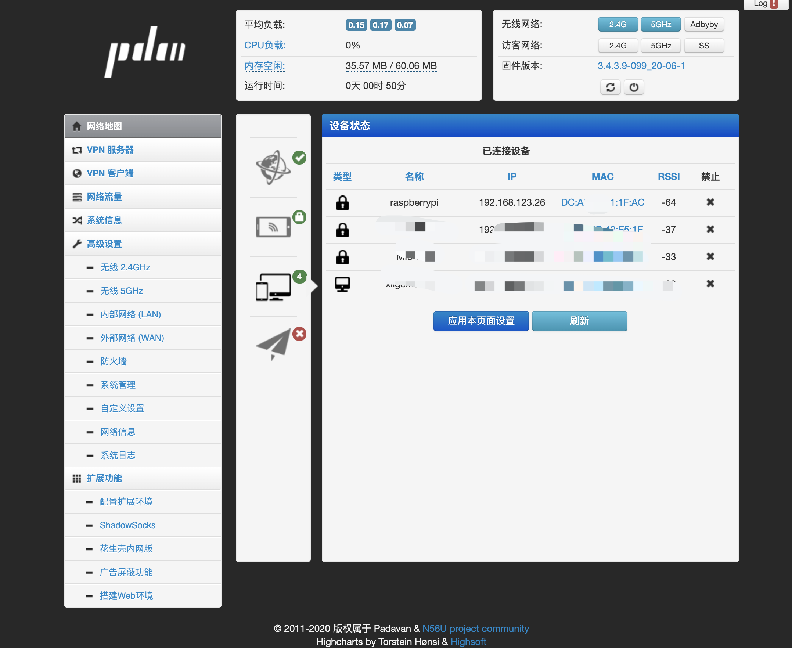
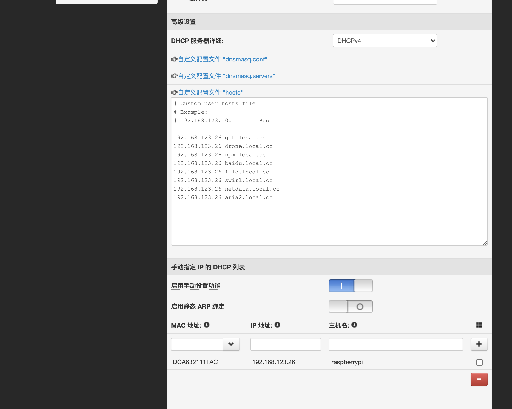
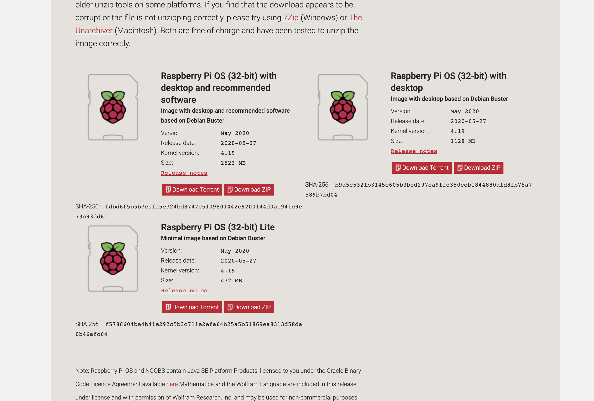
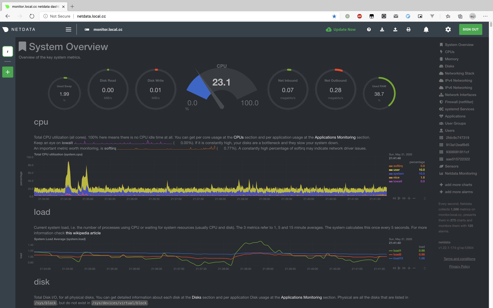
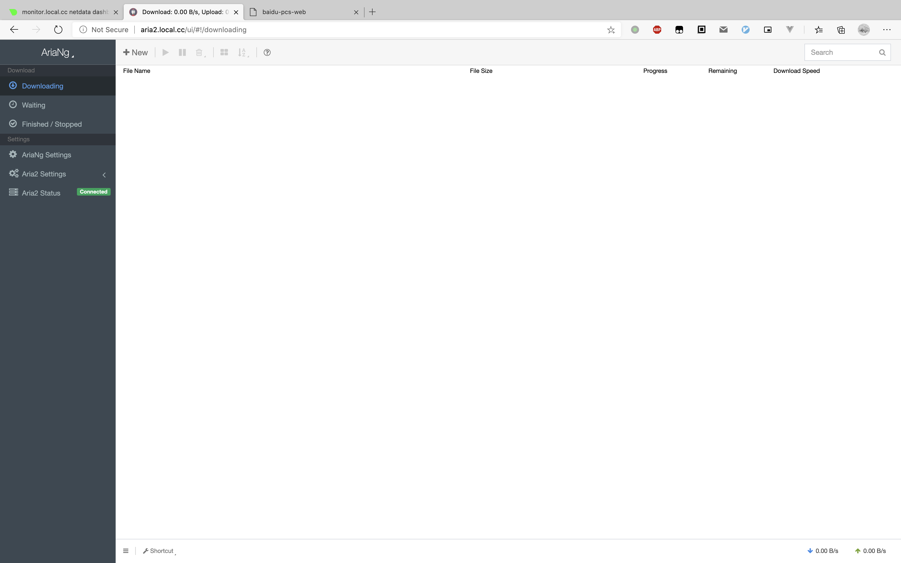
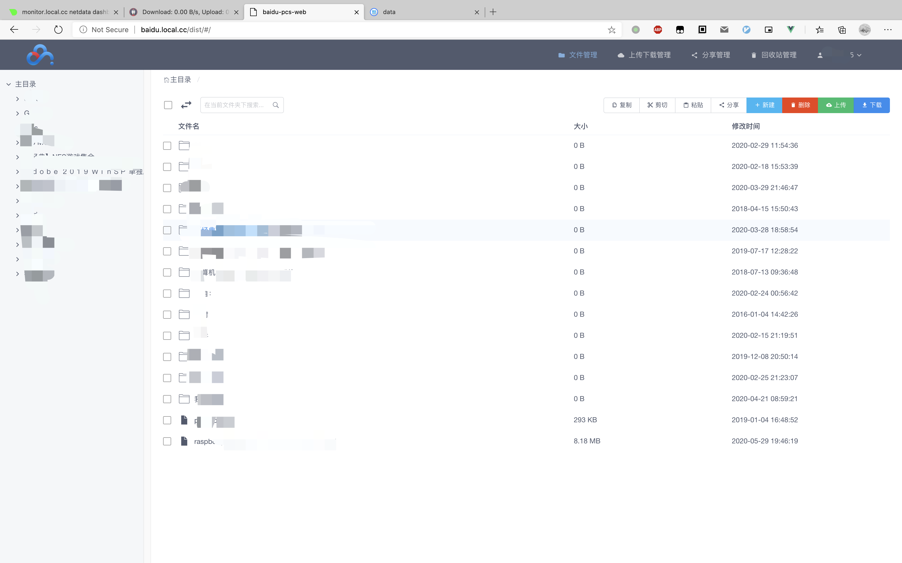
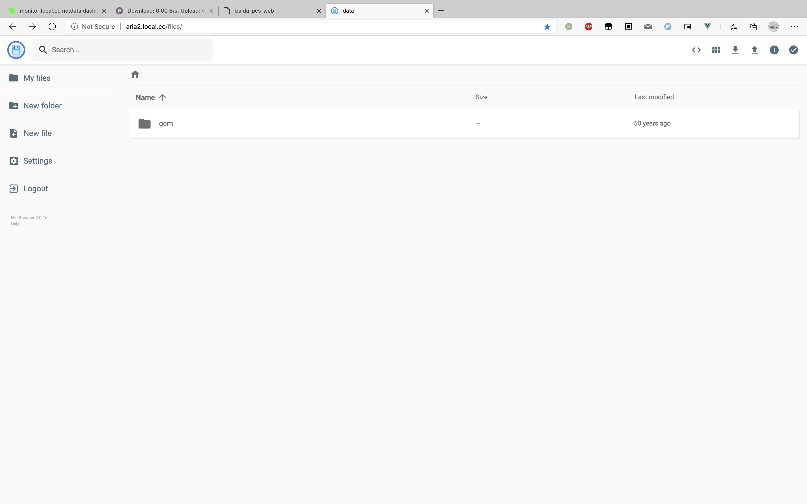

一直都想部署一个局域网服务，保存自己下载的电影、图片等等。空闲的时候，还能挂着下载东西。
一直没空，刚好这个周末有空，就尝试在树莓派 4 上面部署 Docker 服务。配合路由器修改 hosts 用着还不错。
所需硬件：
路由器刷 Padavan 固件(默认用户名/密码是: admin/admin)，可以刷其它固件，只要又绑定 mac 地址功能，和自定义 hosts 功能即可。

树莓派的地址是 192.168.123.26, 记住后面有用

在「内部网络 -> DHCP 配置」中绑定 MAC 地址，以及设置 hosts，到这里，路由器的配置就结束啦。重头戏还是在树莓派里面。
树莓派刷入官方固件
下载地址：https://www.raspberrypi.org/downloads/raspbian/
建议下载 recommend 版本，有 GUI 好用一点点。我就用联了个网，后面基本也没用过 GUI :)
安装好之后，联入路由器，开启 ssh 登陆，然后就可以在电脑上用 ssh 工具登录树莓派。

准备工作，由于在国内，安装软件，以及拉取镜像等操作都可能因为网络原因失败，所以第一步就是替换软件源地址
修改方式参考：https://mirror.tuna.tsinghua.edu.cn/help/raspbian/
使用官网的安装脚本：https://github.com/docker/docker-install
国内可用阿里云的镜像地址来安装：
1 | |
安装完之后，再安装 Docker-Compose：
1 | |
安装完之后，记得修改 Docker Hub 的镜像地址：
修改成中科大的地址，修改方式：https://mirrors.ustc.edu.cn/help/dockerhub.html
到此，Docker 环境就安装好啦。
推荐使用 Docker-compose 来部署服务，因为 docker-compose 可以把配置写到文件中，不用每次启动都输入一遍配置。
可选在树莓派上安装 Nginx 反向代理服务，如果不安装在树莓派上，可以在 Docker 中运行 Nginx，只不过，因此 Docker 中其它服务都必须在同一 network 上。
Docker 相关配置参考：https://github.com/cwxyz007/Dockerfiles
以下服务只能在局域网里面访问，而且因为 Nginx 反向代理加上路由器 hosts 的原因，需要正确的域名才能访问到对应的服务。注意需要用路由器默认 dns，否则 hosts 不会生效。
看看部署好的服务吧：
netdata 监控服务

aria2 下载服务

百度网盘服务

文件浏览服务

到此就可以愉快的玩耍啦
Docker 配置和操作请参考：https://docs.docker.com/reference/